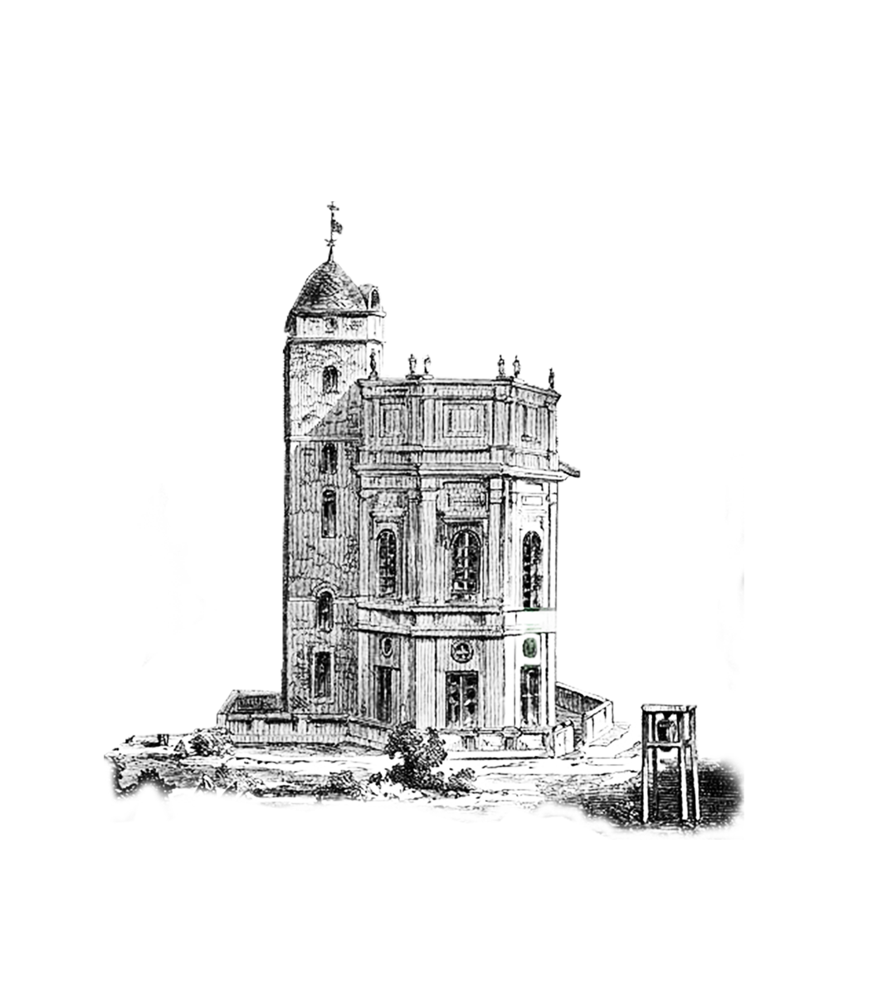

SEDE HISTÓRICA
DEL
OBSERVATORIO ASTRONÓMICO NACIONAL DE COLOMBIA
DEL
OBSERVATORIO ASTRONÓMICO NACIONAL DE COLOMBIA
Con los pies en la tierra y la mirada en el firmamento

Nuestra Historia
El Observatorio Astronómico Nacional de Colombia es una institución de gran relevancia histórica y científica, no solo para el país, sino para toda América Latina. Fundado el 20 de agosto de 1803 por iniciativa del sabio José Celestino Mutis, durante la Expedición Botánica, el Observatorio se convirtió en el primer observatorio astronómico construido en el continente americano. Su creación marcó un hito en el desarrollo de la ciencia en la región y reflejó el espíritu ilustrado de la época.
* Los inicios: Un proyecto ilustrado
El Observatorio fue concebido como parte de un esfuerzo por impulsar el conocimiento científico en el Virreinato de la Nueva Granada. José Celestino Mutis, sacerdote, botánico y astrónomo, entendió la importancia de la astronomía para el avance de disciplinas como la navegación, la cartografía y la agricultura. Con el apoyo del arzobispo-virrey Antonio Caballero y Góngora, se inició la construcción del Observatorio en Bogotá, en lo que hoy se conoce como el Cerro de Monserrate.
El diseño del edificio, de estilo neoclásico, fue encargado al arquitecto Fray Domingo de Petrés, quien también diseñó la Catedral Primada de Bogotá. Su cúpula característica y su estructura circular lo convirtieron en un símbolo de la ciencia y la cultura de la época.
* El Observatorio en el siglo XIX: Ciencia y política
Durante el siglo XIX, el Observatorio jugó un papel crucial en la consolidación de la República de Colombia. Bajo la dirección de Francisco José de Caldas, uno de los próceres de la independencia y destacado científico, el Observatorio se convirtió en un centro de investigación y formación. Caldas utilizó los instrumentos del Observatorio para realizar mediciones astronómicas, estudios climáticos y observaciones geográficas, contribuyendo al desarrollo de la ciencia en el país. Sin embargo, el Observatorio también fue testigo de momentos turbulentos. Durante la Guerra de Independencia, el edificio fue utilizado como fortaleza y cárcel, lo que afectó su funcionamiento como centro científico. A pesar de estos desafíos, el Observatorio logró sobrevivir y continuó siendo un referente para la astronomía en la región.
* El siglo XX: Modernización y nuevos desafíos
A principios del siglo XX, el Observatorio entró en una fase de modernización. Bajo la dirección de astrónomos como Julio Garavito Armero, se adquirieron nuevos instrumentos y se realizaron importantes investigaciones en mecánica celeste y astrofísica. Garavito, considerado uno de los científicos más importantes de Colombia, realizó estudios pioneros sobre la órbita de la Luna y su influencia en los fenómenos terrestres. En las décadas siguientes, el Observatorio enfrentó nuevos desafíos, como el crecimiento urbano de Bogotá, que dificultó las observaciones astronómicas debido a la contaminación lumínica. A pesar de esto, el Observatorio mantuvo su compromiso con la investigación y la divulgación científica.
* El Observatorio en la actualidad: Patrimonio y ciencia
Hoy, el Observatorio Astronómico Nacional de Colombia es reconocido como un monumento nacional y un símbolo del patrimonio científico y cultural del país. Aunque ya no se utiliza para observaciones astronómicas profesionales, su sede histórica alberga un museo y un centro de divulgación científica, donde los visitantes pueden aprender sobre la historia de la astronomía en Colombia y explorar instrumentos históricos, como telescopios y relojes antiguos. Además, el Observatorio sigue siendo un espacio para la educación y la investigación, promoviendo el interés por la astronomía y las ciencias entre las nuevas generaciones. Su legado perdura como testimonio del espíritu científico que ha impulsado el desarrollo de Colombia desde hace más de dos siglos.
Línea de tiempo
1803: Fundación del Observatorio por José Celestino Mutis.
1810: Francisco José de Caldas asume la dirección del Observatorio.
1850: El Observatorio es utilizado como fortaleza durante la Guerra de Independencia.
1920: Julio Garavito Armero realiza investigaciones pioneras en mecánica celeste.
1975: Declarado Monumento Nacional de Colombia.
2023: Celebración de 220 años de historia y ciencia.
Misión y Visión
MISIÓN:
El Observatorio Astronómico Nacional de Colombia tiene como misión preservar, investigar y difundir el patrimonio científico y cultural asociado a la astronomía en Colombia. A través de la conservación de su sede histórica, la promoción de la investigación astronómica y la divulgación científica, buscamos inspirar a las nuevas generaciones y fomentar el interés por la ciencia y el conocimiento del universo. Nos comprometemos a ser un espacio de encuentro entre la historia, la ciencia y la sociedad, contribuyendo al desarrollo educativo y cultural del país.
VISIÓN:
El Observatorio Astronómico Nacional de Colombia aspira a ser un referente nacional e internacional en la preservación del patrimonio científico y la divulgación de la astronomía. Buscamos consolidarnos como un centro de excelencia en la investigación histórica y astronómica, así como en la promoción de actividades educativas y culturales que acerquen la ciencia a todos los ciudadanos. Nuestra visión es ser un símbolo de la riqueza científica de Colombia y un puente entre el pasado, el presente y el futuro de la astronomía en el país.
Visita el Observatorio
El Observatorio Astronómico Nacional de Colombia está ubicado en el Centro Histórico de Bogotá, a pocos metros de la Plaza de Bolívar y comparte entrada con la Casa de Nariño.
Ubicación y cómo llegar
📍 Dirección: Carrera 8 # 7-26, Bogotá, Colombia.
Las formas más recomendadas para llegar son:
🚍 Transporte público:
TransMilenio: La estación más cercana es Museo del Oro (Línea Caracas), desde donde puedes caminar aproximadamente 10 minutos.
Buses del SITP: Hay varias rutas que pasan por el centro histórico y te dejan cerca del Observatorio.
🚖 Taxi o aplicaciones de transporte: Opción cómoda si vienes desde otras zonas de la ciudad.
🚶 A pie o en bicicleta: Si te encuentras en el centro, puedes llegar caminando o en bicicleta, ya que hay ciclovías cercanas.
Recomendaciones para la visita
✅ Horarios y acceso: El Observatorio no siempre está abierto al público. Se recomienda verificar disponibilidad de visitas guiadas o eventos especiales a través de la Universidad Nacional de Colombia antes de ir.
✅ Clima y vestimenta: Bogotá tiene un clima frío y cambiante. Lleva ropa abrigada e impermeable en caso de lluvia.
✅ Respeto al patrimonio: Evita tocar o manipular los equipos sin autorización.
✅ Fotografía y registro: Si deseas tomar fotos, consulta previamente si está permitido.
PATRIMONIO
HISTÓRICO, CIENTÍFICO Y CULTURAL
OAN
HISTÓRICO, CIENTÍFICO Y CULTURAL
OAN